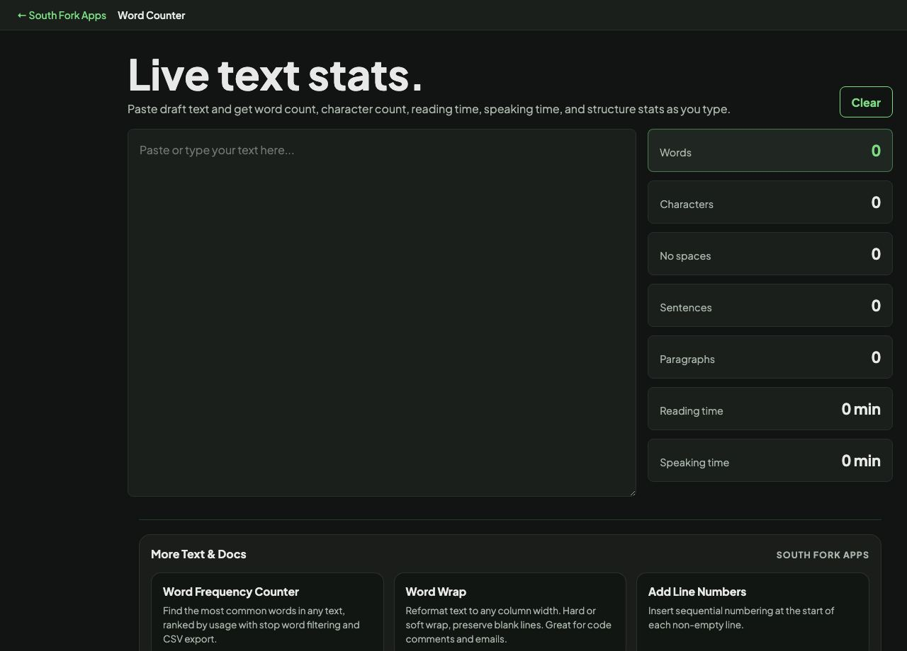

Word Counter
Use this free online word counter to measure draft length, reading time, speaking time, and paragraph structure before you publish, submit, or send.
Word Counter
Word Counter reports words, characters, sentences and paragraphs as you type or paste. It is the quickest way to check a draft against a limit before you submit it.
What counts as a word
Words are counted by splitting on whitespace, which is the same rule word processors use. Hyphenated compounds count as one word, and a number counts as a word.
Sentence counting looks for terminal punctuation, so abbreviations like Dr. and e.g. can inflate the count slightly. Paragraph counting splits on blank lines, which is why a document using single line breaks between paragraphs will report fewer paragraphs than you see.
When it helps
- Checking an essay or article against a word limit before submitting.
- Trimming copy to fit a fixed space in a layout.
- Measuring a draft against a target length while writing.
- Comparing two versions of the same piece for bloat.
Common mistakes
- Assuming every word counter agrees. Different tools handle hyphens, numbers and em dashes differently, so check against the counter your marker or editor uses when a hard limit matters.
- Counting a draft that still contains notes and placeholders.
